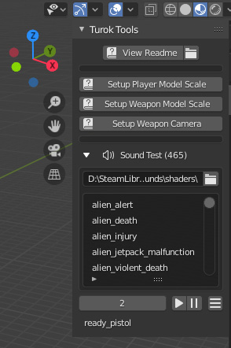

TurokEX Tools v1.3.1 Documentation
By BehemothProgrammer
Installation

Open Blender and navigate to Edit > Preferences
|

|
Importing
|
Exporting
When exporting Animations, make sure you give it a fake user by pressing the little shield icon and then an F will be displayed to the left of the animation name in the list. Otherwise the animation will not be exported. Validate the model and check the System Console for any errors/warnings. |
Creating A Custom Model
- All origins of all objects must be at 0,0,0 and have no rotation and a scale of all 1. you can resize of course just remember to Apply any transform changes you might have made to your object before exporting Ctrl+A -> All Transforms.
- Parent your meshes to the bone you want it connected to.
- For any new bones you create remember to go to the Bone Properties panel and click the “Setup Turok Bone” button. This will set it's head/tail position correctly and make sure it won't deform the mesh. Only move/rotate bones in pose mode.
Editing Turok Properties
Object Panel

|
Type: The Type of Turok Object this Blender Object is: None, Model, Map Staticmesh, Map Actor, Map Sectors, Map Ceiling Sectors, Map Sun, Map Root. Texture Set: Preview how the model will look with a texture set variant. Yaw Offset: Add Yaw Offset key frames to your animation to rotate the root bone in game. Yaw Offset key frames are used in AI Turn Animations. So this way the models root bone can rotate differently from the actual way the AI is turning towards in game.
Validate Turok Model: Press this button to make sure everything is setup correctly and ready to be exported to Turok. Info/Warnings/Errors will be displayed in the System Console. Marker: Whether to use Blend and Loop Frame. Just about all models use this. Blend: The length of frames to blend into this animation (default 5) Loop Frame: The Frame to go after the animation has finished playing. Setting this to the last frame of the animation will make it stop when it finishes playing. So most of the time you want this at either frame 1 or the last frame. Action Key Frames: Add/Remove/Select Action Key Frames that will trigger in game. With a Action Key Frame selected you can edit it's properties.
Bounding Box: If this model is being used as a Staticmesh then set the min/max fields to all zero. If you intend to use this model as an actor then set these fields to encompass the model in all it's animations as well. If you intend to use as both, then you will need to make 2 models. 1 staticmesh version and 1 actor version. There are some helper buttons to show the Bounding Box as an object and then you can edit it visually and click the “Set Min/Max” button to set the min/max fields to the Bounding Box object. |
|
Selecting Meshes that are part of a bones Armature will display it's meshes Properties. Mesh Index: Set to a unique value starting from 0 for each mesh variant. If has same values on Export will sort and assign accordingly. This is the value used in the bones Variants list in order to show/hide this mesh according to the in game Variant value. |

|
Bone Panel
|
Bone Index: The Bones index value will specify the order the bone is saved. You should give a different value to each bone. But you can also leave it as 0 (or any value) and they will be assigned unique values on export according to the order the bones were created in Blender. Variants: A list of what mesh index to use for each variant in game. In this example Variant 0 will show the mesh that has a mesh index of 0 and will hide all the other meshes that are parented to this bone. Only 1 mesh variant is shown. Having multiple meshes with the same index is not possible in game so on Blender Export it will assign the mesh a unique index value if it needs to. |
Animation Action Panel
In Blenders Dope Sheet Viewport, in the action editor, you can select animations and view the Turok Properties panel by pressing N or dragging the right side out. This action panel is the same as the one in the Armatures Object Panel, so see that for the same details.
3D Viewport Tool Panel
|
In any 3D Viewport window, you can view the Turok Tool panel by pressing N or dragging the right side out. View Readme: Click this button to open the Readme.pdf file if you ever need help with this add-on. Setup Player Model Scale: Creates a box object that is the same scale as Turok Setup Weapon Model Scale: Creates a box object that is the same scale as a Weapon Setup Weapon Camera: Setup a Weapon Camera which matches the TurokEX camera so you can easily see what your weapon will look like in game (Activate the camera with the default key “0” on keypad). Sound Test: Open a folder that contains .ksnd files to show them in a list. Click on them in the list to play them. You can also select sounds by ID value and play them. |
 |
Material Panel
|
Convenience Functions: To quickly assign a texture to this material – select an image by clicking on the image icon on the left or opening a new texture, and select the type: One Sided, Two Sided, or Water. And if the image that you selected has any alpha in it. Then click Quick Image Setup and the shader node with the selected image will be added to the material and the Turok material properties will be setup automatically. Import Material from .kmat: Import a material from an existing .kmat file. Use Custom Material Path: If ON will save this material to the specified .kmat file (do not include the extension .kmat in the Material Path). If is OFF will automatically set the material file path to materials/mat_<ExportFileName> Shader: The path to the shader that this material will use. Click the menu button on the right to select a shader from a list of default shaders in the game. Diffuse Color: In the default shaders this is used as color = texture color * diffuse color. Sort: The sort type to render this material on.
Cull: Which side to render Tris.
Blend: Material transparency Full Bright: Do not use any lighting. No Draw: Will not render Depth Test: Draws behind objects based on Depth buffer, otherwise will always draw on top of current render. No Depth Mask: Turns off depth mask. The depth mask masks out areas on the model depending on how far from the camera it is. Alpha Test: Turn ON if you have a texture that uses alpha and use sort type Masked. Discards pixels depending on the outcome of the Alpha Func comparison between the textures alpha value and the Alpha Mask value. Alpha Func: The alpha comparison function (default: gequal) Alpha Mask: The alpha cut off value to discard the pixel. (default: 0.6525) Params: A list of uniform variables the shader will use. Assign the correct names from the shader and specify whether the variable is an Integer or Float. Then assign it's value. |
Shader Panel
Edit Material Texture Properties In Blenders Shader Editor Viewport and select a Texture Image Node and bring up the side panel by pressing N or dragging the right side out.
|
[Node]File Path: Only the filename will be used and not the full path. If the filename is any of the following: _default, _black, _white, _depthbuffer, _framebuffer, _simpleShadow, _wireframeMesh, _wireframeMeshSelected the games builtin texture will be used for it instead. [Node]Texture Interpolation: Linear, Cubic, and Smart will all use “linear” filtering for the Turok texture. Closest will use “nearest”. [Node]Texture Extension: Extend and Clip will use the Turok “clamp” wrapping. Repeat will use Turoks “repeat” wrapping. Texture Sampler Index: Assign this texture a sampler index. If you only have 1 texture which almost all Turok shaders only support then set this to 0. Mirrored: Overrides texture wrapping to "mirrored" which flips the texture on the x and y when it repeats. |